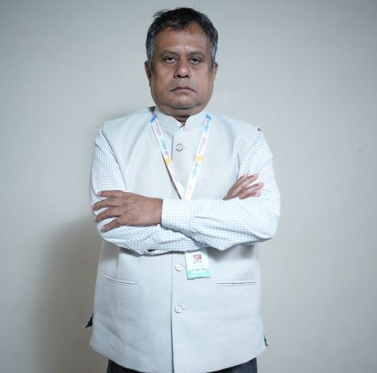

Prof. Shamim Mohammad
Associate Professor
Dr. Shamim received his first degree in rehabilitation sciences from the National institute of Empowerment of People with Intellectual Disabilities, Secunderbad; MA and M.Phil. degrees from the Indian Universities. He majored in Public…